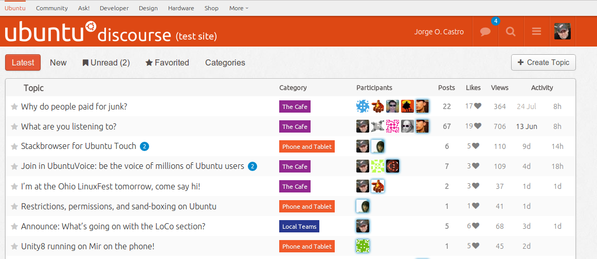
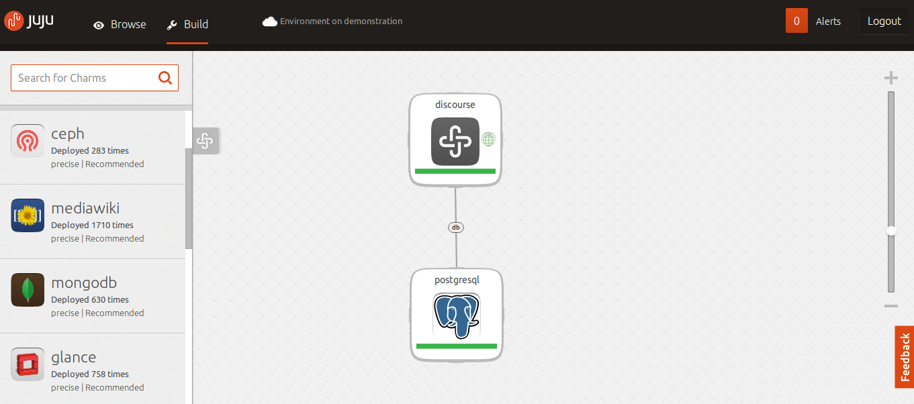

Service Orchestration with Ubuntu in the Cloud
Who is this guy?

Jorge O. Castro <jorge@ubuntu.com>
13 Reasons to use Ubuntu Server in your Cloud
OpenStack and the Cloud Archive (UCA)
Metal-as-a-Service (MAAS)
The Hardware Enablement Stack
Ubuntu Guest on Public Clouds
LXC Containers and Vagrant
You're in fine company...
... and then there's Juju
Let me tell you a story!

Let me tell you a story!

Platform Choices
Wouldn't it have been better built in PHP/MySql. Don't shoot me.
ChrisB
We shouldn't make technology choices because things are hard to deploy
Give me a forum, and give me a database, and get out of the way
I want to drag and drop

I got your CLI too:
juju deploy discourse
juju deploy postgresql
Relating the Services
juju add-relation discourse postgresql:db-admin
Scale Out!
juju add-unit -n20 discourse
The service is the first class citizen, not the machine
Let's write an app, and go to production.
sample-app:
repo: https://github.com/pavelpachkovskij/sample-rails
Deploy right from github
juju deploy rails myapp --config sample-app.yml
juju deploy haproxy
juju add-relation haproxy myapp
We need a database
juju deploy postgresql
juju add-relation postgresql:db myapp
You can migrate and seed the database
juju ssh myapp/0 run rake db:migrate
juju ssh myapp/0 run rake db:seed
juju expose haproxy
Yikes! I'm on Hacker News!
juju add-unit -n 2 myapp
juju remove-unit myapp
Hack locally, deploy anywhere
juju switch local
juju ...
Hack on code ....
juju switch aws
juju ...
Big whoop, you deployed an internet forum.
Cassandra
Hadoop
OpenStack
MongoDB
Node.js and Django apps
... over 130 services
Deployment Options
 EC2
OpenStack
MAAS
Local Development (LXC)
EC2
OpenStack
MAAS
Local Development (LXC)
Does your project run on the cloud? Come talk to us!
Thanks!
github.com/juju/charm-championship - Share your infrastructure, win a prize
juju.ubuntu.com
jujucharms.com - Play with the GUI!
github.com/charms
#juju on Freenode